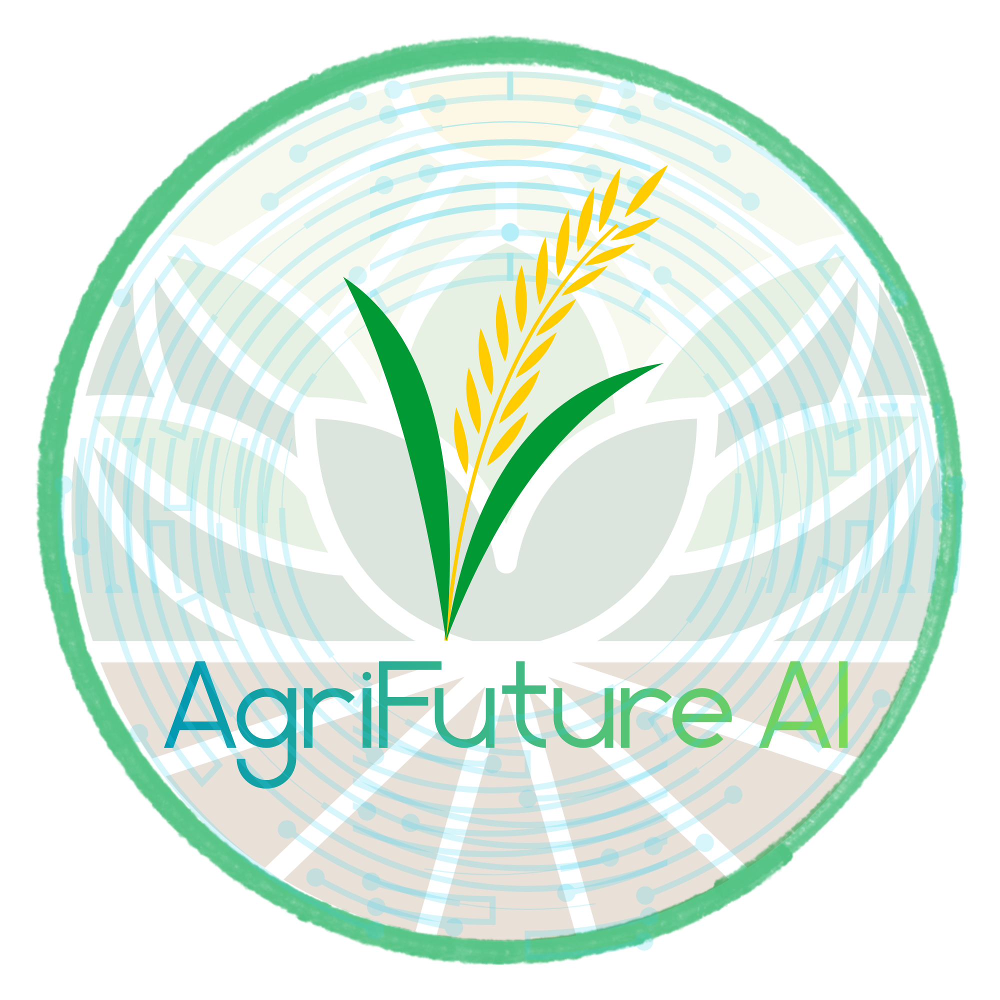

AgriFuture
AI
Welcome
Login / เข้าสู่ระบบ
กำลังวิเคราะห์ข้อมูล
AI กำลังวิเคราะห์สภาพดินย้อนหลังในพื้นที่ของคุณ
⚠️
เกิดข้อผิดพลาด
ไม่สามารถวิเคราะห์ข้อมูลได้ กรุณาลองใหม่
กลับไปกรอกข้อมูลใหม่
พืชทางเลือกที่แนะนำเพิ่มเติม
พืชราคาดีที่ควรปลูกในแต่ละเดือน (สำหรับพื้นที่ของคุณ)
คำแนะนำจากผู้เชี่ยวชาญ
🚨
กลับไปกรอกข้อมูลใหม่